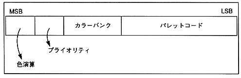

∙ There are color bank method and RGB code method for expressing pixel color drawn (written) in the frame buffer. With the color bank method, 16, 64, 128, 256 colors can be expressed within one character, and with the RGB code method, 32768 colors can be expressed within one character.
Figure 1.10 Color bank method bit configuration
